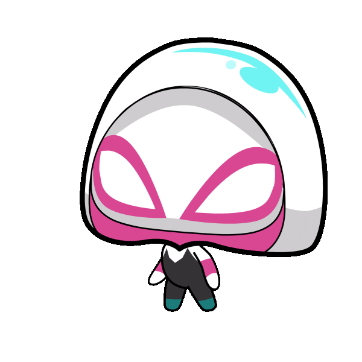

I made various Excel representations examining the correlation between zodiac sign of the individuals on the FBI most wanted list in comparison to their crime committed. Fun fact, my zodiac big three are Leo, Cancer, and Libra. One of my big three committed the most crimes in a catergory. Click on FBI Crimes vs. Zodiac Sign Excel to find out!
![A navy blue rectangle bordered by white houses eight circles. There are eight circles on the rectangle, four circles on the top row, and four on the bottom. From left to right, top to bottom, the eight circles are colored light purple with a heart in the center, light pink with three stick people supporting each other's backs, light blue with a gear centered, light gray with a four boxed hierarchy centered, light green with an open eye in the center, light yellow with a glowing lightbulb in the center, light brown with a balanced scale centered, and light orange with a skating individual facing right centered. The graphic describes the eight Jungian cognitive functions.](assets/mbti cog functions.png)
I was curious to find out my MBTI myself, since I felt the online tests were inaccurate. I researched for days and compiled the MBTI Cognitive Functions Document, link doesn't work :(. From my research, I learned my MBTI type was actually INTP, instead of INTJ like the tests told me! Check out the document by clicking the link!
![A light pink rectangle with white lines with hearts in the center in the corners. A white cat outlined with red holding a red heart is centered. There are eight hearts closely surrounding the cat colored light pink, pink, and dark pink. To the direct left of the cat is an opened heart box full of white, red, and pink square and circle chocolates. To the direct right of the cat is a checkered square cookie with two brown squares in the top left corner and bottom right corner and two white squares in the bottom left corner and top right corner. To the bottom right of the cat are three marshmallows.](assets/jp white day.png)
This powerpoint is about Japanese White Day, which I made because I was curious about the differences between American Valentine's Day and Japanese White Day. Check out the White Day powerpoint here!
